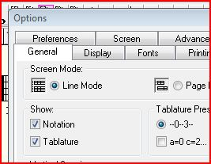
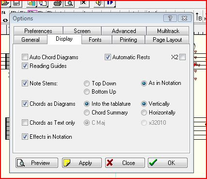
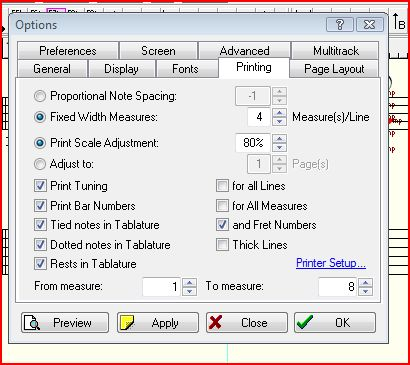
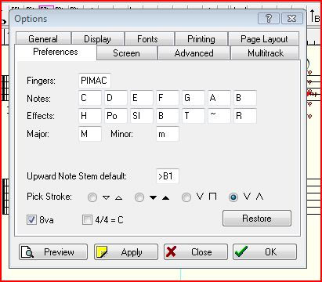
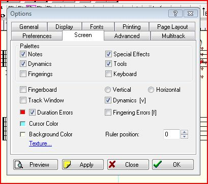
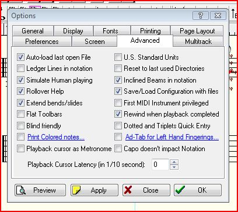
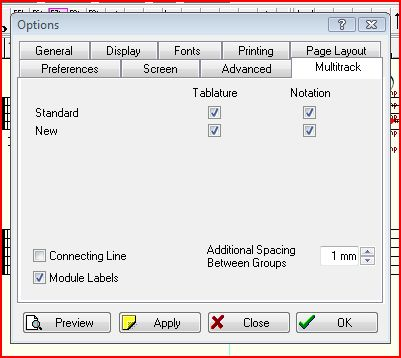

Lesson 2
Notes to Lesson 2
Now we are going to start putting chords together and going up and down the fingerboard. The idea here is to get comfortable making the chords and playing them in time. This is where TablEdit is a great benefit.
First of all, let's set up TablEdit to so that all the features we'll use will be available. If you are using TEFview, some of the following may not apply.
Set up Options:
From the Files Drop Down Menu, select Options, then General.

Make sure that there is a check in "Notation" and "Tablature". We need to see both.
In the "Display" tab, check:
Automatic Rests
Reading Guides
Chords as Diagrams
Into the tablature, vertically
Effects in Notation

In the "Printing" tab, check everything below Adjust to except thick lines (unless you are nearly blind and need them)

In the "Preferences" tab, change fingers to PIMAC and Upward Note Stem default to >B1 (which is default)

In the "Screen" tab, Check:
Notes
Dynamics
Special Effects
Tools
Dynamics [v]
Duration Errors

In the "Advanced" tab, as a minimum, check:
Simulate Human playing
Rollover Help
Extend bends/slides
Inclined Beams in Notation
Save/Load Configuration with files
Rewind when playback completed

In the "Multitrack" tab, check Module Labels.

Now your TablEdit has been synchronized with the version that was used to create these TEF's we'll be using.
From the "Midi" Drop Down menu, if we check "Repeat", then the TEF continually loops. Note that we can start the midi playback by tapping on the Space Bar. And another tap stops the playback. If we loop the playback, we can listen to all modules, and then on a subsequent playback (while actually playing) we can click on one of the green stripes mentioned earlier and silence that module. This is useful after listening once or twice, we can silence one part and play along with our guitars.
Lesson 2 only has TEF's with one module. Later, we will have TEF's with at least two modules each.
Let's briefly discuss what the six exercises are and what Mickey is teaching us:
Exercise 1: This exercise shows the main substitutions for a Tonic (I) chord, and the Sub-tonic (IV), when the roots of these chords appear on the 6th string. Note the diagrams go from a Triad major chord to a Major 7 to a Major 6 and return to the Major 7. There is always a sense of movement but the foundation remains for those two measures. Mickey starts with a G chord and goes up to a Eb. If your guitar restricts you from going that high on the fretboard, just take it up to D. We'll find other locations for Eb later!
Also note that we can actually start at F and then go to F#/Gb. Note that if you want to play those chords in F, you'll have an open string on Form 3 (Maj6). Find a fingering that is comfortable for you. I personally make this chord just like the Form 2 F Maj7, and lift my 3rd finger so that the D string rings open. That makes an F Maj7 to F Maj6 one of the easiest chord progressions in the world!
There is a technique that classical guitarists pioneered and many others have adopted. It's called "anchoring a finger". The theory is that by maintaining at least one finger in contact with the strings while changing chords, accuracy is greatly improved. Going from a Form 1 to Form 2 is pretty easy to find the anchor finger (that is, if one is using a barre to make the Form 1 instead of the thumb on the sixth string. The 1st finger remains on the sixth string, while the other three fingers move to the new positions. This Form 1 to Form 2 doesn't usually present problems, but going from a Form 2 to Form 3 is a little trickier and not quite as obvious. In this change, the anchor finger is the 4th finger. Practice holding that finger on the string and fret, and very shortly, you'll be a disciple of this method. In the above discussion of the F Maj7 to F Maj6 change, we have 3 anchor fingers (1st, 3rd, and 4th).
One additional comment: when we have an unplayed string between two played strings, lightly touch that unplayed string by the finger above it to kill it. Then if it is played, such as a plectrum player strumming through the strings, it doesn't sound.
Exercise 2: This exercise is similar to Part 1, but we don't have the Form 1. The same applies to adding F and F#/Gb as in Part 1.
Exercise 3: This exercise uses chord forms 4 and 5. These chords can be used as a substitute for V7, ii, iii, and iv and are commonly found when forms 1, 2, and 3 are used because they are close by. These chords are very important substitutes and are probably the most used chord forms in this book. The anchor finger is the 2nd finger. In both Forms 4 and 5, the anchor finger will kill the 5th string by lightly touching it.
For fingerstyle players: when you're playing this exercise, vary your right hand. Play the chords with a thumb strum, and then with a P I M A pinch. Note that each chord uses 5 strings, so vary the strings you pinch, such as 6, 3, 2, 1 then 6, 4, 3, 2, then 6, 4, 3, 1. The last "pinch" might seem a little unusual or even take a little practice to do, but it's an important pinch that gives a nice texture to chords.
Then do the same thing with just a three finger pinch, not only P I M, but also P I A.
Exercise 4: This exercise is a combination of parts 2 and 3. Forms 4 and 5 are used as a substitute for the V7 chord. Listen to it and see if you can hear that I - V7 chord progression.
Note that going from a Form 3 to a Form 4, our anchor finger is the 2nd finger. But this time we release a little tension and slide this finger up 2 frets. That technique is called a "portamento". Even though there is movement, the anchor finger gives us more stability. After just a short period, you'll become fast friends with portamentos with anchor fingers and it'll become automatic without even thinking about it.
Exercise 5: This exercise is similar to Part 3 but with the addition of Form 6, the V13b5b9. Form 6, as we talked about in the Chord Discussion of Lesson 1, is the most colorful of Mickey's V7 chord substitutes for Group A. It will almost always resolve to a Form 1, 2, or 3 chord form. Note that it looks it may be a relative to a Form 1 chord, but actually it is closer to a form 5 chord. We'll discuss this in a later lesson. I just remember that the form this resolves to is 1 fret lower.
If we isolate the Form 4 to Form 6 change, there isn't a finger that can be used as an anchor. So let's be good jazz musicians and improvise! While changing maintain the 2nd finger in contact with the 6th string as we reach to note that string with the 1st finger, one fret lower. As soon as the 1st finger is anchored then move the rest of the fingers to their new positions. I'd be willing to wager that most of us have been doing that naturally without any additional thought.
Part 6: I thought of this exercise as being the dessert with a cherry on it. We have a real chord progression that we can use as a "turnaround" at the end of a phrase or the last two measures of a tune. Our first key is G and notice that the bass line goes G to Bb to A to Ab, a nice modern sounding chromatic line. From a Form 2 (or 1 or 3) to a Form 9 doesn't have an obvious anchor finger. Let's do this: hold the 1st finger on the 6th string until the 2nd finger contacts the 6th string. Then do a portamento up 2 frets. Once again, for many players this comes naturally and not a lot of thought needs to go into learning it. Going from a Form 6 to a Form 1 or 2 is no big deal as we have our 1st finger as an anchor.
Review: The use of "anchor fingers", either stationary or in conjunction with slides and portamentos greatly improves accuracy. The chord changes in this lesson are the foundation for our rhythm work throughout our course and later careers as guitarists.
Good luck and have fun!